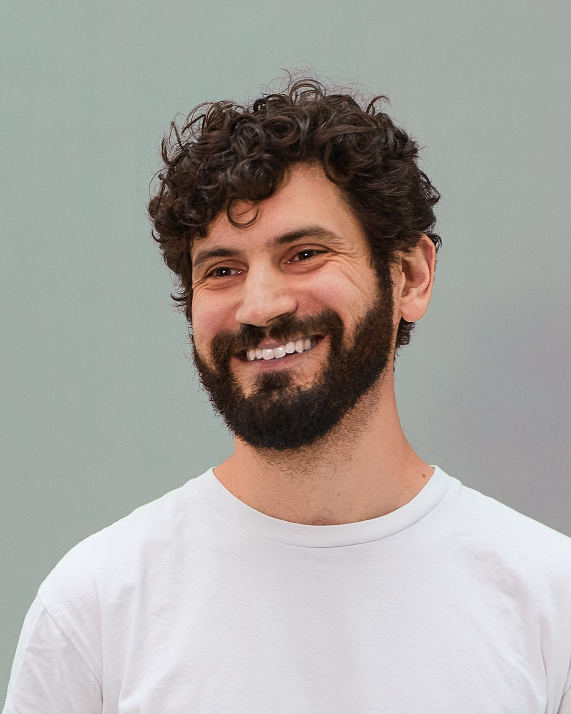
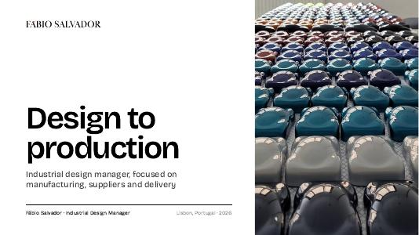

I get your products from first sketch to factory floor.
I'm Fábio, an industrial design manager available for ongoing projects, project management, team building and training.

Industrial designProject managementProduct development and deliveryManufacturing and operationsDirector of product
MVPCMFDFMDFALCABOMEVTDVTPVTCTBNPIQAQCMVECertificationSourcing
What I do inside your team
Run the project
Plans, budgets, suppliers and clients kept moving in the same direction, on brief and on schedule.
Lead the design
Hands-on industrial design from concept and CMF through to CAD, or steering the designers you already have.
Get it made
Design for manufacture, prototyping, supplier handling, quality control and certification, through to production.
I've sat on your side of the table. I founded and ran my own industrial design studio from 2015, so I know what agency delivery looks like from the inside: the client calls, the budgets and the Friday deadlines.
Selected work
Four projects where I led the design, ran the project, or took it into production. Often all three.
Teams I've worked in
I've built my own team, joined other studios' teams, and taught students to run projects. Tap a row to read more.
Makers Department Founder. Grew the team from one to five and ran three to four projects at once. 2015 – now
I started Makers Department in 2015 and incorporated it in 2016. My first contractor came on in 2018 and my first full-time employee in 2019. We were mostly industrial designers until 2022, when a senior design engineer joined to own design for manufacture across our projects. At our peak, in 2021 and 2022, we were four to five people running three to four projects at the same time.
How I ran it. Short stand-ups where everyone shared what they'd done and got feedback from the others, planning at the start of each week, and every project tracked against its budget and timeline. I took on the stakeholder problems so the team could keep working.
How I trained and motivated people. One-to-one sessions when I spotted a skill gap, such as CAD surfacing. Social Fridays visiting local makers, workshops and creative people. And time set aside for our own projects, with looser briefs than client work allows, so everyone had something they owned.
UNIT9 Industrial designer and head of fabrication inside an agency team of five, for Škoda. 2026
I joined UNIT9's team for the Škoda DuoBell, working alongside their design engineer and a CAD designer, with a workshop on manufacture. I managed the mechanical design, brought in the University of Salford's research and took the bell through suppliers into production.
Hyphen Design Started as a junior designer, grew into running the McLaren programme. 2013 – 2024
Client work for Bosch Appliances, McLaren and Tangle Teezer, among others. I moved from sketches and CAD into project and operations management, and two of the accounts, McLaren and Dishmatic, carried on with me when I set up my own studio.
Hammond Studios with KMI Lead industrial designer on Ted Baker's 88 fragrance bottles, launched worldwide in 2019. 2017 – 2018
Hammond Studios partnered with the agency KMI on a fragrance line for Ted Baker. I was the main industrial designer, designing and engineering a series of perfume bottles in several sizes. The range was manufactured and launched worldwide in 2019.
Fuse Prototype manager between their creative team and my technical team. 2022
Fuse was developing an interactive wand: an electromechanical device full of motion sensors that reacts differently to different gestures. I managed the prototype, translating between their creative team and my technical team, and took it from rough concepts to a working prototype for demonstrations.
Kingston University Taught project management to creative students working on live briefs from the BBC and Gov.uk. 2023
Part-time tutor in the Creative Industries department, teaching project management to first- and second-year media production and marketing students: 30 to 35 at a time, working in teams of five. We brought in live briefs from the BBC, Gov.uk and other organisations, and students presented their work to people who actually work there. Some projects went on to become real, and some students got placements from them.
How I taught. With a co-teacher, we opened each phase with examples and case studies, then set exercises so students applied the methods to their own projects. My part was going table by table: giving feedback, and showing teams practical ways to brainstorm, run a productive discussion and gather feedback.
PurePods Designer and shareholder. Design, manufacturing, Amazon, stock and logistics. 2020 – 2025
PurePods started as a design job and became a business I part-owned. I designed the refillable filter and developed it with our overseas manufacturers, then ended up running most of the rest too: pricing, the Amazon and Shopify stores, marketing, and logistics across the UK and EU.
When Brita changed their jugs after our launch and broke compatibility, we designed an adapter, 3D-printed and checked for safety and patents first, then tooled for volume. We sent it free to customers who complained and later shipped it with every pack. Having my own money in a product taught me to think about cost and margin, not just form.
More products I've worked on
What people say
From recommendations on LinkedIn, by clients and by people I've managed.
Fabio has a unique knack for bringing order to complex projects, keeping clients, suppliers, and leadership completely at peace. He is a trustworthy, highly capable professional and a genuinely great human being to have on any team.
As an exceptional industrial product designer, he bridges rigorous technical execution and user-centric aesthetics from initial concept to manufacturing-ready CAD. Highly adaptable and detail-oriented, Fabio elevates any product team.
When I launched Innotrend, having him join as a partner was a no-brainer. He expertly handled Design, IP, and Manufacturing, balancing creative talent with operational drive. His proactive energy is infectious.
He's the kind of manager who genuinely leads from the front. With his direction, our team managed to ship two products to market and win a prestigious Desall Challenge. What really stands out about Fabio isn't just the project results, it's how he treats his people.
He created the perfect environment for me to enhance my skills and gain a comprehensive understanding of the design industry. I couldn't have asked for a better mentor.
His passion for design and quality is immediately obvious, and it carries through into all the work he delivers. Working together feels effortless, and is very enjoyable, and the results speak for themselves.
Clients and collaborations
Downloads

Design to production
How I work with studios and agencies: projects, engagement and recommendations. 12 pages.
Download PDFGot a project that needs a steady pair of hands?
Tell me what you're building and where it's stuck. I'll tell you honestly whether I can help.
Industrial design manager
Industrial designer with 12+ years taking products from concept through mass production, as a designer, a project manager and a studio founder. I join design studios and agencies as a senior consultant and contractor to run projects, lead design work and manage suppliers through to production.
My career, as a project plan
Roles overlap because I often ran them side by side.
Experience
Founder and studio lead
2015 – nowMakers Department, London and Lisbon
- Founded and built an industrial design consultancy for clients including McLaren Automotive, Joseph Joseph and Unilever, and startups including Valkyrie Industries, Sensate and Flowbio.
- Grew the team from one to five people between 2018 and 2022, running three to four projects at once with stand-ups, weekly planning and budget and timeline tracking, and training each designer one to one.
- Set and held quality standards across every project, linking client, design team, engineers and manufacturing partners.
- Owned the commercial side of client relationships: negotiation, budgets, risk and liability. Advised on DFM, certifications and IP strategy.
Freelance with studios and agencies
2017 – 2026Working inside other teams
- UNIT9, for Škoda (2026): industrial designer and head of fabrication on the DuoBell, from research to production.
- Hammond Studios with KMI, for Ted Baker (2017–2018): lead industrial designer on the 88 fragrance bottle range, launched worldwide in 2019.
- Fuse (2022): prototype manager, taking an interactive motion-sensing wand from concept to working demo.
Designer to operations manager, McLaren programme
2013 – 2024Hyphen Design Ltd, then through my own studio, for McLaren Automotive
- Joined Hyphen as a junior industrial designer on client work including Bosch Appliances, McLaren, Tangle Teezer and Dishmatic, then took over McLaren's dealership configuration tools programme.
- Ran it end to end: UK and Chinese suppliers, an in-house assembly team of up to three in London, quality control, and a coded packing and tracking system for about 130 kits a year across roughly 120 dealerships.
Designer and shareholder
2020 – 2025Innotrend Ltd, trading as PurePods, London
- Designed and engineered water-filtering products, managing overseas manufacturing partners through prototyping and scale-up.
- Ran day-to-day operations: sales channels, inventory, customer service and marketing.
Tutor, project management for creatives
2023Kingston University, Creative Industries department, part-time
- Taught project management to first- and second-year media production and marketing students, 30 to 35 at a time in teams of five, on live briefs from the BBC, Gov.uk and others. Some projects became real and some students won placements.
Industrial design freelancer
2013 – 2015London
- Delivered independent design work for international clients, including multi-year support to Magnitone and packaging development for Re-Cleanse.
- Worked within a small engineering team on the UK's first self-balancing personal transport product.
Earlier: product design intern at Paul Cocksedge Studio (2012–2013) and exhibition assistant at MUDE Lisboa (2010–2011).
What I'm good at
Education
Design degree (Licenciatura), Industrial and Product DesignUniversidade Técnica de Lisboa, 2008–2011
SolidWorks 3D CAD, Level B (Advanced)2010
Languages
Portuguese, native
English, full professional
Spanish, proficient
French, elementary
Contact
Lisbon, Portugal
contact@fabiosalvador.com
linkedin.com/in/fabio-a-salvador